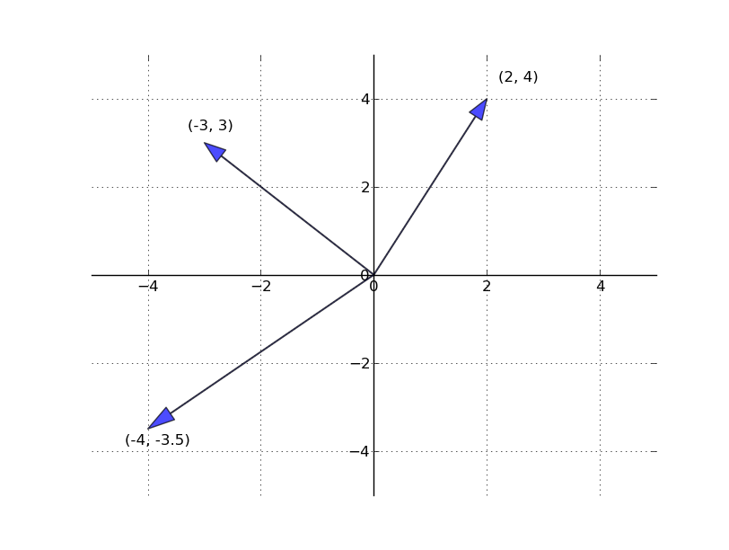
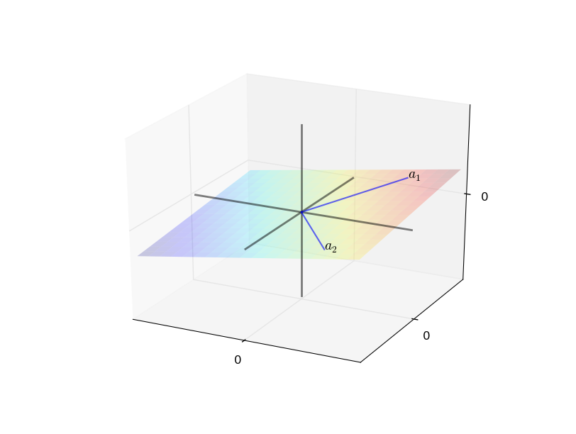
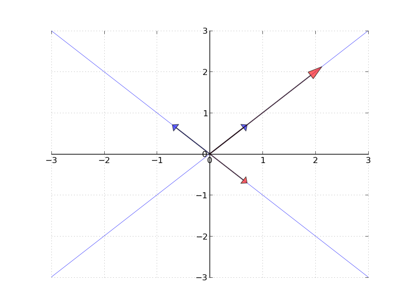

using LinearAlgebraLinear Algebra in Julia
1 Introduction
Linear algebra is one of the most commonly used branches of mathematics in economics. A remarkably wide range of applied problems—from solving supply-and-demand systems to estimating regression models to characterizing dynamic equilibria—ultimately reduce to operations on vectors and matrices. This set of notes introduces the core concepts of linear algebra and shows how to implement them in Julia using the LinearAlgebra standard library.
Consider a system of two linear equations:
\[ \begin{array}{c} y_1 = a x_1 + b x_2 \\ y_2 = c x_1 + d x_2 \end{array} \]
Or, more generally, a system of \(n\) equations in \(k\) unknowns:
\[ \begin{array}{c} y_1 = a_{11} x_1 + a_{12} x_2 + \cdots + a_{1k} x_k \\ \vdots \\ y_n = a_{n1} x_1 + a_{n2} x_2 + \cdots + a_{nk} x_k \end{array} \]
The objective is to solve for \(x_1, \ldots, x_k\) given the coefficients \(a_{ij}\) and the values \(y_1, \ldots, y_n\). Along the way, we will need to answer several important questions:
- Does a solution actually exist?
- Are there many solutions, and if so how should we interpret them?
- If no exact solution exists, is there a “best” approximate solution?
- If a solution exists, how should we compute it efficiently?
These notes will show how to use Julia to answer each of these questions numerically.
2 Vectors
2.1 Definition
A vector of length \(n\) is simply a sequence of \(n\) numbers, which we write as a column:
\[ x = \left(\begin{matrix} x_1\\\vdots\\ x_n\end{matrix}\right) \]
The set of all \(n\)-vectors is denoted \(\mathbb{R}^n\). For example, \(\mathbb{R}^2\) is the plane, and a vector in \(\mathbb{R}^2\) is just a point on that plane.

2.2 Vectors in Julia
Julia is built with vectors and matrices as fundamental building blocks, making it a natural language for linear algebra. We begin by loading the LinearAlgebra standard library, which provides many of the functions we will use:
A simple vector can be created with square brackets:
x = [1., 2.]2-element Vector{Float64}:
1.0
2.0Julia provides several convenience functions for constructing common vectors:
x = zeros(3) # A vector in R^3 filled with zeros
println("x = $x")
y = ones(4) # A vector in R^4 filled with ones
println("y = $y")
z = collect(LinRange(0, 1, 6)) # 6 evenly spaced values between 0 and 1
println("z = $z")x = [0.0, 0.0, 0.0]
y = [1.0, 1.0, 1.0, 1.0]
z = [0.0, 0.2, 0.4, 0.6, 0.8, 1.0]The zeros and ones functions are especially common in numerical work. You will often initialize a vector of zeros and then fill in computed values, or use a vector of ones to construct a design matrix for regression (as we will see later in these notes).
2.2.1 Editing Vectors
Once a vector is created, you can edit individual elements using square-bracket indexing:
x[1] = 1
x3-element Vector{Float64}:
1.0
0.0
0.0You can also access multiple elements at once using slice notation:
println(x[2:3])[0.0, 0.0]2.2.2 Assigning to Slices
When assigning values to a slice of a vector, you must use .= (the “dot-equals” operator) rather than plain =. The dot tells Julia to perform the assignment element-wise:
x[2:3] = 3, 4 # This produces an errorArgumentError: indexed assignment with a single value to possibly many locations is not supported; perhaps use broadcasting `.=` instead? Stacktrace: [1] setindex_shape_check(::Tuple{Int64, Int64}, ::Int64) @ Base ./indices.jl:276 [2] _unsafe_setindex!(::IndexLinear, A::Vector{Float64}, x::Tuple{Int64, Int64}, I::UnitRange{Int64}) @ Base ./multidimensional.jl:1017 [3] _setindex! @ ./multidimensional.jl:1008 [inlined] [4] setindex!(A::Vector{Float64}, v::Tuple{Int64, Int64}, I::UnitRange{Int64}) @ Base ./abstractarray.jl:1443 [5] top-level scope @ ~/University of Oregon Dropbox/David Evans/University of Oregon/Courses/Spring 2026/EC 410/Lectures and Website/Julia/Linear Algebra/Linear Algebra Notes.qmd:123
x[2:3] .= 3, 4 # This works: assigns element-wise
x3-element Vector{Float64}:
1.0
3.0
4.0This is our first encounter with Julia’s dot syntax for element-wise operations, which we will see much more of below.
2.3 Vector Operations
2.3.1 Addition
When we add two vectors, we add them element by element:
\[ x + y = \left[ \begin{array}{c} x_1 \\ x_2 \\ \vdots \\ x_n \end{array} \right] + \left[ \begin{array}{c} y_1 \\ y_2 \\ \vdots \\ y_n \end{array} \right] := \left[ \begin{array}{c} x_1 + y_1 \\ x_2 + y_2 \\ \vdots \\ x_n + y_n \end{array} \right] \]
Both vectors must have the same length for addition to be defined.
x = ones(3)
y = [2, 4, 6]
x + y3-element Vector{Float64}:
3.0
5.0
7.02.3.2 Scalar Multiplication
Scalar multiplication takes a scalar (a single number) \(\gamma\) and a vector \(x\), and multiplies every element by \(\gamma\):
\[ \gamma x := \left[ \begin{array}{c} \gamma x_1 \\ \gamma x_2 \\ \vdots \\ \gamma x_n \end{array} \right] \]
4*x3-element Vector{Float64}:
4.0
4.0
4.0Geometrically, scalar multiplication stretches or shrinks a vector (and flips its direction if \(\gamma < 0\)). Together with addition, these two operations define the structure of a vector space.

2.3.3 Element-wise Multiplication
In addition to scalar multiplication, we can multiply two vectors element by element using the .* operator:
println(x, y)
xy = x .* y[1.0, 1.0, 1.0][2, 4, 6]3-element Vector{Float64}:
2.0
4.0
6.0
TipThe Dot Operator
In Julia, prefixing any operator with . applies it element-wise. This works with any function or operator: .+, .-, .*, ./, .^, and even f.(x) for any function f. This is called broadcasting and is one of Julia’s most powerful features for numerical computing.
2.3.4 Inner Products and Norms
The inner product (or dot product) of two vectors \(x, y \in \mathbb{R}^n\) is defined as:
\[ x' y := \sum_{i=1}^n x_i y_i \]
The inner product measures how “aligned” two vectors are. Two vectors are orthogonal (perpendicular) if their inner product is zero.
The norm of a vector \(x\) represents its “length” or magnitude:
\[ \| x \| := \sqrt{x' x} := \left( \sum_{i=1}^n x_i^2 \right)^{1/2} \]
This is the Euclidean distance from the origin to the point \(x\). Norms are important in optimization and statistics: minimizing \(\|y - Ax\|\) is the basis of least-squares regression.
# Two ways to compute the inner product
println(sum(x .* y)) # Manual: element-wise multiply, then sum
println(dot(x, y)) # Built-in function from LinearAlgebra12.0
12.0# Two ways to compute the norm
println(sqrt(dot(x, x))) # Manual: sqrt of inner product with itself
println(norm(x)) # Built-in function1.7320508075688772
1.7320508075688772# An example of orthogonal vectors
z = [-1., 2., -1]
println(dot(x, z)) # Zero: x and z are orthogonal0.03 Spanning and Linear Independence
3.1 Linear Combinations and Span
Given a set of vectors \(A = \{a_1, \ldots, a_k\} \subset \mathbb{R}^n\), a natural question is: what new vectors can we create by combining these using addition and scalar multiplication? A vector \(y \in \mathbb{R}^n\) is a linear combination of \(A\) if there exist scalars \(\beta_1, \ldots, \beta_k\) such that:
\[ y = \beta_1 a_1 + \beta_2 a_2 + \ldots + \beta_k a_k \]
The set of all vectors that can be expressed as linear combinations of \(A\) is called the span of \(A\).

The concept of span tells us what part of \(\mathbb{R}^n\) is “reachable” from a given set of vectors.
3.1.1 Examples
If \(A\) contains only a single vector \(a_1 \in \mathbb{R}^n\), then its span is the line through \(a_1\) and the origin—all scalar multiples \(\beta a_1\).
A more important example is the canonical basis for \(\mathbb{R}^n\). These are the \(n\) vectors:
\[ e_1 = \left[\begin{matrix}1\\0\\\vdots\\0\end{matrix}\right],\quad e_2 = \left[\begin{matrix}0\\1\\\vdots\\0\end{matrix}\right],\quad\ldots,\quad e_n = \left[\begin{matrix}0\\0\\\vdots\\1\end{matrix}\right] \]
The span of \(\{e_1, e_2, \ldots, e_n\}\) is all of \(\mathbb{R}^n\), because for any vector \(x \in \mathbb{R}^n\) we can write:
\[ x = x_1 e_1 + x_2 e_2 + \ldots + x_n e_n \]
That is, any vector is a linear combination of the canonical basis vectors, with the components of \(x\) serving as the coefficients.
3.1.2 A Counterexample
Not every collection of \(n\) vectors spans \(\mathbb{R}^n\). Consider \(A_0 = \{e_1, e_2, e_1 + e_2\} \subset \mathbb{R}^3\). If \(y = (y_1, y_2, y_3)\) is a linear combination of these vectors, then the third component must satisfy \(y_3 = 0\). So \(A_0\) fails to span all of \(\mathbb{R}^3\)—it only reaches the plane where the third coordinate is zero.
ImportantKey Insight
Adding more vectors to a set does not always increase the span. The new vector must point in a “genuinely new direction”—one that is not already reachable as a linear combination of the existing vectors.
3.2 Linear Independence
The counterexample above motivates the concept of linear independence. A set of vectors \(A = \{a_1, \ldots, a_k\} \subset \mathbb{R}^n\) is linearly dependent if some strict subset of \(A\) has the same span as \(A\) itself. Equivalently, at least one vector in the set can be written as a linear combination of the others—it is “redundant.” The set \(A\) is linearly independent if no such redundancy exists.
There are several equivalent ways to define linear independence:
- No vector in \(A\) can be formed as a linear combination of the others.
- The only solution to \(\beta_1 a_1 + \ldots + \beta_k a_k = 0\) is \(\beta_1 = \cdots = \beta_k = 0\).
An important consequence: since \(\mathbb{R}^n\) can be spanned by \(n\) vectors (the canonical basis), any set of more than \(n\) vectors in \(\mathbb{R}^n\) must be linearly dependent. There simply is not “room” for more than \(n\) independent directions.
3.2.1 Unique Representations
A key property of linearly independent vectors is that they provide unique representations of every vector in their span. Suppose \(A = \{a_1, \ldots, a_k\}\) is linearly independent and some vector \(y\) can be written as:
\[ y = \beta_1 a_1 + \ldots + \beta_k a_k = \gamma_1 a_1 + \ldots + \gamma_k a_k \]
Subtracting one expression from the other gives:
\[ (\beta_1 - \gamma_1) a_1 + \cdots + (\beta_k - \gamma_k) a_k = 0 \]
By linear independence, the only way this sum can equal zero is if every coefficient is zero, which means \(\gamma_i = \beta_i\) for all \(i\). In other words, the representation is unique.
This property is essential in regression analysis: when we write \(y = X\beta + \varepsilon\) and the columns of \(X\) are linearly independent, there is a unique coefficient vector \(\beta\) that provides the best linear fit.
4 Matrices
4.1 Definition and Basic Properties
An \(n \times k\) matrix is a rectangular array of numbers with \(n\) rows and \(k\) columns:
\[ A = \left[ \begin{array}{cccc} a_{11} & a_{12} & \cdots & a_{1k} \\ a_{21} & a_{22} & \cdots & a_{2k} \\ \vdots & \vdots & & \vdots \\ a_{n1} & a_{n2} & \cdots & a_{nk} \end{array} \right] \]
We can also view \(A\) as a collection of \(k\) column vectors in \(\mathbb{R}^n\):
\[ A = \left[\begin{matrix}a_1 & a_2 & \cdots & a_k\end{matrix}\right] \quad\text{where}\quad a_i = \left[\begin{matrix} a_{1i}\\ a_{2i} \\\vdots \\ a_{ni}\end{matrix}\right] \]
This “columns as vectors” perspective turns out to be extremely useful. It connects matrices to the concepts of span and linear independence we just discussed: the column space of \(A\) is exactly the span of its column vectors.
Some terminology:
- A matrix with \(n = 1\) is a row vector; a matrix with \(k = 1\) is a column vector.
- A matrix with \(n = k\) is square.
- The transpose \(A'\) (also written \(A^T\)) is formed by swapping rows and columns: the element at position \((i,j)\) in \(A\) moves to position \((j,i)\) in \(A'\).
\[ A = \left[ \begin{array}{cccc} a_{11} & a_{12} & \cdots & a_{1k} \\ \vdots & \vdots & & \vdots \\ a_{n1} & a_{n2} & \cdots & a_{nk} \end{array} \right] \quad A' = \left[ \begin{array}{cccc} a_{11} & a_{21} & \cdots & a_{n1} \\ \vdots & \vdots & & \vdots \\ a_{1k} & a_{2k} & \cdots & a_{nk} \end{array} \right] \]
If \(A\) is \(n \times k\), then \(A'\) is \(k \times n\).
4.1.1 Matrices and Transpose in Julia
In Julia, matrices are created by separating elements with spaces (within a row) and semicolons (between rows):
A = [1 2 3;
4 5 6]2×3 Matrix{Int64}:
1 2 3
4 5 6The transpose is written naturally with an apostrophe:
A'3×2 adjoint(::Matrix{Int64}) with eltype Int64:
1 4
2 5
3 64.2 Special Matrices
Several kinds of matrices come up so often that they have special names.
4.2.1 Symmetric Matrices
A square matrix is symmetric if \(A = A'\)—that is, \(a_{ij} = a_{ji}\) for all \(i\) and \(j\). Symmetric matrices arise naturally in economics: variance-covariance matrices, Hessian matrices of utility functions, and input-output matrices are all symmetric (or can be made so).
A = [1 2; 2 1]2×2 Matrix{Int64}:
1 2
2 1A' # Same as A2×2 adjoint(::Matrix{Int64}) with eltype Int64:
1 2
2 14.2.2 Diagonal Matrices
A matrix is diagonal if the only nonzero entries lie on the principal diagonal (positions where the row index equals the column index: \(a_{11}, a_{22}, \ldots\)). The diag function extracts the diagonal of a matrix, and diagm constructs a diagonal matrix:
A = [1 2;
3 4]2×2 Matrix{Int64}:
1 2
3 4diag(A) # Extract the diagonal elements2-element Vector{Int64}:
1
4diagm(0 => [1, 2, 3]) # Create a 3×3 diagonal matrix3×3 Matrix{Int64}:
1 0 0
0 2 0
0 0 3The 0 => syntax specifies which diagonal to place the values on. The main diagonal is 0; 1 is one above, -1 is one below:
diagm(1 => [1, 2, 3]) # Values on the first super-diagonal4×4 Matrix{Int64}:
0 1 0 0
0 0 2 0
0 0 0 3
0 0 0 04.2.3 The Identity Matrix
The most important diagonal matrix is the identity matrix \(I\), which has ones on the diagonal and zeros everywhere else:
diagm(0 => ones(3))3×3 Matrix{Float64}:
1.0 0.0 0.0
0.0 1.0 0.0
0.0 0.0 1.0The identity matrix can also be written in terms of the canonical basis vectors:
\[ I = \left[\begin{matrix}e_1 & e_2 & \cdots & e_n\end{matrix}\right] \]
The defining property of the identity matrix is that \(IA = A = AI\) for any conformable matrix \(A\)—it is the matrix equivalent of multiplying by 1.
4.3 Matrix Operations
4.3.1 Addition and Scalar Multiplication
Matrix addition and scalar multiplication work exactly as you would expect from vectors—element by element. For addition, both matrices must have the same dimensions (\(n \times k\)). For scalar multiplication, every element is multiplied by the scalar \(\gamma\):
\[ \gamma A := \left[ \begin{array}{ccc} \gamma a_{11} & \cdots & \gamma a_{1k} \\ \vdots & & \vdots \\ \gamma a_{n1} & \cdots & \gamma a_{nk} \end{array} \right] \]
A = [1 2; 3 4]
B = diagm(0 => ones(2))
2*A2×2 Matrix{Int64}:
2 4
6 8A + B2×2 Matrix{Float64}:
2.0 2.0
3.0 5.04.3.2 Matrix Multiplication
Matrix multiplication is the central operation of linear algebra, and it is not element-wise. The \((i, j)\)-th element of the product \(AB\) is the inner product of row \(i\) of \(A\) with column \(j\) of \(B\):

For the product \(AB\) to be defined, \(A\) must be \(n \times k\) and \(B\) must be \(k \times m\) (the “inner dimensions” must match). The result is an \(n \times m\) matrix.
An important fact: in general, \(AB \neq BA\). Matrix multiplication is not commutative. (This is analogous to why Julia uses * for string concatenation—both are non-commutative operations.)
4.3.3 Matrix-Vector Multiplication
A special case of matrix multiplication arises when we multiply an \(n \times k\) matrix \(A\) by a \(k \times 1\) vector \(x\), producing an \(n \times 1\) vector:
\[ Ax = \left[ \begin{array}{c} a_{11} x_1 + \cdots + a_{1k} x_k \\ \vdots \\ a_{n1} x_1 + \cdots + a_{nk} x_k \end{array} \right] \]
There is a beautiful alternative way to read this. If \(a_1, \ldots, a_k\) are the columns of \(A\), then:
\[ Ax = x_1 a_1 + x_2 a_2 + \ldots + x_k a_k \]
In other words, \(Ax\) is a linear combination of the columns of \(A\), with the entries of \(x\) as weights. This means \(Ax\) always lies in the span (or column space) of \(A\). This perspective is the key to understanding when systems of equations have solutions.
4.3.4 Matrix Multiplication in Julia
In Julia, matrix multiplication uses the * operator:
A = [1 2; 3 4]2×2 Matrix{Int64}:
1 2
3 4I2 = diagm(0 => ones(2))2×2 Matrix{Float64}:
1.0 0.0
0.0 1.0A * I2 # Multiplying by the identity returns A2×2 Matrix{Float64}:
1.0 2.0
3.0 4.04.3.5 Element-wise vs. Matrix Multiplication
It is crucial to distinguish between matrix multiplication (*) and element-wise multiplication (.*):
A .* I2 # Element-wise: very different from A * I22×2 Matrix{Float64}:
1.0 0.0
0.0 4.0Julia also provides a built-in identity matrix object I that automatically conforms to the correct size:
A * I # No need to construct an explicit identity matrix2×2 Matrix{Int64}:
1 2
3 44.4 Broadcasting
Broadcasting is Julia’s mechanism for applying operations across arrays of different shapes. It replicates smaller arrays to match the dimensions of larger ones, all without actually creating copies in memory. The syntax uses the dot prefix (.).
A = diagm(0 => ones(2))2×2 Matrix{Float64}:
1.0 0.0
0.0 1.0b = [1, 2]2-element Vector{Int64}:
1
2A .+ b # Adds b to each column of A2×2 Matrix{Float64}:
2.0 1.0
2.0 3.0Broadcasting follows a simple set of rules. Julia compares array shapes element-wise, starting from the trailing (rightmost) dimensions. Two dimensions are compatible when:
- They are equal, or
- One of them has length 1.
For example, consider arrays with the following shapes:
A (4d array): 8 × 1 × 6 × 1
B (3d array): 7 × 1 × 5
Result (4d array): 8 × 7 × 6 × 5These are compatible because each pair of dimensions either matches or one is 1. But the following pair is not compatible:
A (2d array): 2 × 1
B (3d array): 8 × 4 × 3The second dimensions (2 and 4) are neither equal nor 1, so broadcasting fails. Understanding these rules will save you from cryptic dimension-mismatch errors.
5 Solving Systems of Equations
5.1 Matrix Formulation
With vectors and matrices in hand, we can now express our original system of equations compactly. The system:
\[ \begin{array}{c} y_1 = a_{11} x_1 + a_{12} x_2 + \cdots + a_{1k} x_k \\ \vdots \\ y_n = a_{n1} x_1 + a_{n2} x_2 + \cdots + a_{nk} x_k \end{array} \]
can be written as a single matrix equation: \(y = Ax\).
Since \(Ax = x_1 a_1 + \ldots + x_k a_k\) is a linear combination of the columns of \(A\), the equation \(y = Ax\) has a solution only if \(y\) lies in the span (column space) of \(A\). If the columns of \(A\) are linearly independent and span all of \(\mathbb{R}^n\), then a unique solution exists for every \(y\). In this case we say \(A\) has full column rank.
The nature of the solution depends on the shape of \(A\):
- Square case (\(n = k\), full rank): exactly one solution.
- Over-determined (\(n > k\)): more equations than unknowns; typically no exact solution, but a best approximation exists.
- Under-determined (\(n < k\)): fewer equations than unknowns; infinitely many solutions.
Let us examine each case.
5.2 The Regular (Square) Case
When \(A\) is \(n \times n\) with linearly independent columns, the equation \(y = Ax\) has a solution for every \(y \in \mathbb{R}^n\), and this solution is unique. Define \(g(y)\) as the function that maps each \(y\) to its solution: \(y = Ag(y)\).
This function \(g\) turns out to be linear:
\[ g(\alpha w + \beta z) = \alpha g(w) + \beta g(z) \]
Since any linear function from \(\mathbb{R}^n\) to \(\mathbb{R}^n\) can be represented by a matrix, there exists a matrix \(A^{-1}\) such that \(g(y) = A^{-1} y\). This matrix is called the inverse of \(A\), and it satisfies:
\[ I = A^{-1}A = A A^{-1} \]
To solve \(y = Ax\), we simply pre-multiply both sides by \(A^{-1}\):
\[ A^{-1} y = A^{-1} A x = Ix = x \]
ImportantKey Result
When \(A\) is square and invertible, the solution to \(y = Ax\) is \(x = A^{-1}y\).
Not every square matrix has an inverse. The determinant provides a test: if \(\det(A) \neq 0\), then \(A\) is invertible (its columns are linearly independent). If \(\det(A) = 0\), the columns are linearly dependent, and no inverse exists.
5.2.1 Solving in Julia: The Inverse
A = [1 2; 3 4]
y = ones(2)
det(A) # Check that det(A) ≠ 0-2.0A_inv = inv(A)2×2 Matrix{Float64}:
-2.0 1.0
1.5 -0.5x = A_inv * y2-element Vector{Float64}:
-0.9999999999999998
0.9999999999999999A * x # Verify: should return y2-element Vector{Float64}:
1.0
1.00000000000000045.2.2 Solving in Julia: The Backslash Operator
Julia provides the backslash operator \ as a more efficient and numerically stable way to solve \(Ax = y\):
x = A \ y2-element Vector{Float64}:
-1.0
1.0
TipBest Practice
Prefer A \ y over inv(A) * y for solving systems. The backslash operator is more numerically stable (less sensitive to rounding errors) and more efficient (it avoids explicitly computing the inverse, which is an expensive operation). Computing the full inverse and then multiplying is rarely necessary in practice.
5.3 Over-determined Systems
When \(A\) is \(n \times k\) with \(n > k\)—more equations than unknowns—the system is over-determined. This is the case that arises in least-squares regression: we have more data points than parameters, and we want to find the parameter vector that provides the best fit.
In general, an arbitrary \(y \in \mathbb{R}^n\) will not lie in the span of \(A\) (which is at most \(k\)-dimensional in an \(n\)-dimensional space), so no exact solution exists. Instead, we look for the \(x\) that minimizes the distance between \(y\) and \(Ax\):
\[ \hat{x} = \arg\min_x \| y - Ax \| \]
When \(A\) has full column rank, the solution is given by the normal equations:
\[ \hat{x} = (A'A)^{-1}A'y \]
This is precisely the OLS (Ordinary Least Squares) estimator from econometrics. The matrix \((A'A)^{-1}A'\) is called the pseudo-inverse of \(A\), and Julia provides it via the pinv function.
5.3.1 Example: Fitting a Line
Suppose we want to fit a line \(y = mx + c\) through some noisy data:
x = [0, 1, 2, 3]
y = [-1, 0.2, 0.9, 2.1]4-element Vector{Float64}:
-1.0
0.2
0.9
2.1We rewrite this as a matrix equation \(y = Ap\) where \(A = [x \;\; \mathbf{1}]\) is the design matrix and \(p = [m \;\; c]'\) is the parameter vector:
A = [x ones(length(x))]4×2 Matrix{Float64}:
0.0 1.0
1.0 1.0
2.0 1.0
3.0 1.0The least-squares solution is:
m, c = pinv(A) * y
print(m, c)1.0000000000000002-0.9499999999999998We can verify this matches the normal equations formula \((A'A)^{-1}A'y\):
(A' * A) \ A' * y2-element Vector{Float64}:
0.9999999999999998
-0.94999999999999965.3.2 Plotting the Fit
using Plotsscatter(x, y, label="Original data", markersize=10)
plot!(x, m*x .+ c, color=:red, label="Fitted line")![]()
This is the essence of linear regression: find the line (or hyperplane) that minimizes the sum of squared residuals. The tools we have built up—vectors, matrices, inner products, norms, and the pseudo-inverse—provide both the mathematical foundation and the computational machinery.
5.4 Under-determined Systems
When \(A\) is \(n \times k\) with \(n < k\)—fewer equations than unknowns—the system is under-determined. In this case, we expect either no solutions (if \(y\) is not in the column space of \(A\)) or infinitely many solutions.
To understand why there are infinitely many solutions, consider the kernel (or null space) of \(A\): the set of all vectors \(\hat{x}\) such that \(A\hat{x} = 0\). If \(x\) is any solution to \(y = Ax\) and \(\hat{x}\) is in the kernel, then \(x + \hat{x}\) is also a solution:
\[ A(x + \hat{x}) = Ax + A\hat{x} = y + 0 = y \]
So we can add any kernel element to a known solution and get another valid solution. When the system is under-determined, the kernel is nontrivial (it contains nonzero vectors), giving us infinitely many solutions.
WarningCaution
Under-determined systems have infinitely many solutions. Methods like pinv return the minimum-norm solution—the solution with the smallest \(\|x\|\). Depending on the problem, this may or may not be the most economically meaningful solution. In structural estimation, additional restrictions (theory, moment conditions, etc.) are typically imposed to pin down a unique solution.
6 Eigenvalues and Eigenvectors
6.1 Definition
For a square \(n \times n\) matrix \(A\), we are interested in finding scalar \(\lambda\) and nonzero vector \(v \in \mathbb{R}^n\) such that:
\[ Av = \lambda v \]
When this equation holds, \(v\) is called an eigenvector of \(A\) and \(\lambda\) is the corresponding eigenvalue. The operation \(Av\) simply scales \(v\) by \(\lambda\)—the matrix acts like scalar multiplication along the direction of \(v\).

Eigenvalues and eigenvectors are fundamental in economics. They determine the stability of dynamic systems (e.g., whether a Solow model converges to its steady state), characterize principal components in data analysis, and play a central role in spectral methods for solving dynamic programming problems.
6.2 Finding Eigenvalues
To find eigenvalues, we rearrange \(Av = \lambda v\) as:
\[ 0 = Av - \lambda v = (A - \lambda I)v \]
For this equation to have a nonzero solution \(v\), the matrix \(A - \lambda I\) must have linearly dependent columns. This happens precisely when:
\[ \det(A - \lambda I) = 0 \]
The expression \(\det(A - \lambda I)\) is a polynomial of degree \(n\) in \(\lambda\), called the characteristic polynomial. Its roots are the eigenvalues.
6.3 Properties of Eigenvalues
Several useful facts connect eigenvalues to other matrix properties:
- The determinant of \(A\) equals the product of its eigenvalues: \(\det(A) = \lambda_1 \cdot \lambda_2 \cdots \lambda_n\).
- The trace of \(A\) (sum of diagonal elements) equals the sum of its eigenvalues: \(\text{tr}(A) = \lambda_1 + \lambda_2 + \cdots + \lambda_n\).
- If \(A\) is symmetric, all eigenvalues are real (not complex).
- If \(A\) is invertible with eigenvalues \(\lambda_1, \ldots, \lambda_n\), then \(A^{-1}\) has eigenvalues \(1/\lambda_1, \ldots, 1/\lambda_n\).
Property 1 gives us another way to check invertibility: \(A\) is invertible if and only if none of its eigenvalues are zero. Property 3 is especially useful because symmetric matrices arise so often in economics (variance-covariance matrices, Hessians of symmetric loss functions, etc.).
6.4 Eigenvalues in Julia
Julia makes eigenvalue computation straightforward with the eigen function:
A = [1 2; 2 1];
evals, evecs = eigen(A)Eigen{Float64, Float64, Matrix{Float64}, Vector{Float64}}
values:
2-element Vector{Float64}:
-1.0
3.0
vectors:
2×2 Matrix{Float64}:
-0.707107 0.707107
0.707107 0.707107evals # The eigenvalues2-element Vector{Float64}:
-1.0
3.0evecs # The eigenvectors (as columns)2×2 Matrix{Float64}:
-0.707107 0.707107
0.707107 0.707107
TipReading the Output
The columns of evecs are the eigenvectors, and they correspond to the eigenvalues in evals in the same order. So the first column of evecs is the eigenvector for evals[1], and so on.
7 Matrix Decompositions
In the previous sections we solved systems of equations using the inverse (\(A^{-1}\)) and the backslash operator (\). Behind the scenes, Julia does not compute the inverse directly—instead, it decomposes the matrix into a product of simpler matrices and then solves the system using those factors. These decompositions are the workhorses of numerical linear algebra. Understanding them gives you insight into what Julia is actually doing when you type A \ y, and it helps you choose the right tool when performance or numerical accuracy matters.
7.1 LU Decomposition
The LU decomposition factors a square matrix \(A\) into the product of a lower triangular matrix \(L\) and an upper triangular matrix \(U\):
\[ A = LU \]
A lower triangular matrix has all its nonzero entries on or below the main diagonal; an upper triangular matrix has all its nonzero entries on or above the main diagonal. For a \(3 \times 3\) example:
\[ L = \begin{bmatrix} l_{11} & 0 & 0 \\ l_{21} & l_{22} & 0 \\ l_{31} & l_{32} & l_{33} \end{bmatrix}, \qquad U = \begin{bmatrix} u_{11} & u_{12} & u_{13} \\ 0 & u_{22} & u_{23} \\ 0 & 0 & u_{33} \end{bmatrix} \]
The intuition is straightforward: LU decomposition is Gaussian elimination stored in matrix form. When you learned to solve systems of equations by hand—subtracting multiples of one equation from another to create zeros below the pivot—you were implicitly computing the LU decomposition. The matrix \(U\) is the row-echelon form you arrive at after elimination, and \(L\) records the multipliers you used along the way.
Why is this useful? Suppose you need to solve \(Ax = b\) for many different right-hand sides \(b_1, b_2, \ldots, b_m\) but the same matrix \(A\). Without the LU decomposition, you would need to perform Gaussian elimination from scratch each time. With LU, you factor \(A\) once (the expensive step), and then each subsequent solve reduces to two cheap triangular solves: first solve \(Lz = b\) for \(z\) (forward substitution), then solve \(Ux = z\) for \(x\) (back substitution). Triangular systems are trivial to solve because each equation involves only one new unknown.
In Julia, the lu function computes the decomposition:
A = [2.0 1.0 1.0;
4.0 3.0 3.0;
8.0 7.0 9.0]
F = lu(A)LU{Float64, Matrix{Float64}, Vector{Int64}}
L factor:
3×3 Matrix{Float64}:
1.0 0.0 0.0
0.25 1.0 0.0
0.5 0.666667 1.0
U factor:
3×3 Matrix{Float64}:
8.0 7.0 9.0
0.0 -0.75 -1.25
0.0 0.0 -0.666667The result F is a factorization object. You can extract the individual factors:
F.L # Lower triangular factor3×3 Matrix{Float64}:
1.0 0.0 0.0
0.25 1.0 0.0
0.5 0.666667 1.0F.U # Upper triangular factor3×3 Matrix{Float64}:
8.0 7.0 9.0
0.0 -0.75 -1.25
0.0 0.0 -0.666667We can verify the decomposition by checking that \(LU\) reconstructs \(A\) (up to row permutations, since Julia’s LU uses partial pivoting for numerical stability—it may reorder the rows of \(A\)):
F.P * A ≈ F.L * F.U # P is the permutation matrixtrueThe permutation matrix \(F.P\) records any row swaps that Julia performed. Partial pivoting ensures that the algorithm does not divide by very small numbers, which would amplify rounding errors. This is why LU decomposition is preferred over naive Gaussian elimination in practice.
Once you have the factorization, solving systems with different right-hand sides is fast:
b₁ = [1.0, 2.0, 3.0]
b₂ = [4.0, 5.0, 6.0]
x₁ = F \ b₁ # Uses the stored LU factors
x₂ = F \ b₂ # No need to re-factor A
println("x₁ = $x₁")
println("x₂ = $x₂")x₁ = [0.5, 0.5, -0.5]
x₂ = [3.5, -2.4999999999999996, -0.5000000000000001]7.2 QR Decomposition
The QR decomposition factors a matrix \(A\) (not necessarily square) into the product of an orthogonal matrix \(Q\) and an upper triangular matrix \(R\):
\[ A = QR \]
An orthogonal matrix \(Q\) satisfies \(Q'Q = I\)—its columns are mutually orthogonal unit vectors. Geometrically, multiplying by \(Q\) rotates or reflects vectors without stretching them.
In Julia:
A = [1.0 2.0;
3.0 4.0;
5.0 6.0]
F = qr(A)LinearAlgebra.QRCompactWY{Float64, Matrix{Float64}, Matrix{Float64}}
Q factor: 3×3 LinearAlgebra.QRCompactWYQ{Float64, Matrix{Float64}, Matrix{Float64}}
R factor:
2×2 Matrix{Float64}:
-5.91608 -7.43736
0.0 0.828079F.Q # Orthogonal factor (stored in compact form)3×3 LinearAlgebra.QRCompactWYQ{Float64, Matrix{Float64}, Matrix{Float64}}F.R # Upper triangular factor2×2 Matrix{Float64}:
-5.91608 -7.43736
0.0 0.828079The deep connection between QR and least squares is one of the most important results in numerical linear algebra. Recall from the over-determined systems section that the least-squares solution to \(y = Ax\) is \(\hat{x} = (A'A)^{-1}A'y\). If we substitute \(A = QR\):
\[ \hat{x} = (R'Q'QR)^{-1}R'Q'y = (R'R)^{-1}R'Q'y = R^{-1}(R')^{-1}R'Q'y = R^{-1}Q'y \]
This is much better numerically than the normal equations. The matrix \(A'A\) can be ill-conditioned (its eigenvalues span a wide range), which amplifies rounding errors when you invert it. The QR approach avoids forming \(A'A\) entirely, working instead with \(R\) (which has much better conditioning) and the orthogonal matrix \(Q\) (which preserves distances perfectly). This is exactly what Julia’s backslash operator does internally when you solve an over-determined system with A \ y.
7.3 Cholesky Decomposition
The Cholesky decomposition applies to matrices that are symmetric positive definite (SPD). It factors such a matrix \(A\) into the product of a lower triangular matrix \(L\) and its transpose:
\[ A = LL' \]
This is a special case of LU decomposition that exploits symmetry: since \(A = A'\), we can write \(A = LU\) where \(U = L'\), cutting the work (and storage) roughly in half. But the Cholesky decomposition only exists when \(A\) is symmetric and positive definite—we will define positive definiteness carefully in a later section.
In economics, the most common SPD matrix is the variance-covariance matrix \(\Sigma\) of a random vector. By construction, \(\Sigma\) is symmetric (\(\text{Cov}(X_i, X_j) = \text{Cov}(X_j, X_i)\)) and positive semi-definite (\(\text{Var}(a'X) = a'\Sigma a \geq 0\) for all \(a\)). When no linear combination of the variables is deterministic, \(\Sigma\) is strictly positive definite.
Σ = [4.0 2.0;
2.0 3.0] # A symmetric positive definite matrix
C = cholesky(Σ)Cholesky{Float64, Matrix{Float64}}
U factor:
2×2 UpperTriangular{Float64, Matrix{Float64}}:
2.0 1.0
⋅ 1.41421C.L # Lower triangular Cholesky factor2×2 LowerTriangular{Float64, Matrix{Float64}}:
2.0 ⋅
1.0 1.41421C.L * C.L' ≈ Σ # Verify the decompositiontrueOne powerful application of the Cholesky decomposition is generating correlated random variables. Suppose you want to draw random vectors \(x \sim N(0, \Sigma)\). You cannot simply draw each component independently, because that would give you \(N(0, I)\)—uncorrelated variables. The trick is to start with independent standard normals \(z \sim N(0, I)\) and multiply by the Cholesky factor \(L\):
\[ x = Lz \quad \Longrightarrow \quad \mathbb{E}[xx'] = L \, \mathbb{E}[zz'] \, L' = L I L' = LL' = \Sigma \]
So \(x\) has exactly the covariance structure \(\Sigma\). This technique is used constantly in Monte Carlo simulation, bootstrap methods, and any setting where you need to simulate correlated economic shocks.
using Random
Random.seed!(42)
L = C.L
z = randn(2, 1000) # 1000 draws of independent standard normals
x = L * z # Transform to have covariance Σ
# Verify: the sample covariance should be close to Σ
using Statistics
println("Sample covariance:")
println(round.(cov(x'), digits=2))
println("\nTrue covariance:")
println(Σ)Sample covariance:
[4.09 1.98; 1.98 2.98]
True covariance:
[4.0 2.0; 2.0 3.0]
TipWhich Decomposition Should I Use?
| Decomposition | When to use it |
|---|---|
| LU | General square systems, especially when solving \(Ax = b\) for many different \(b\) with the same \(A\) |
| QR | Least-squares problems (over-determined systems); more numerically stable than the normal equations |
| Cholesky | Symmetric positive definite systems (e.g., involving covariance matrices); fastest of the three |
In practice, Julia’s \ operator automatically selects the best decomposition based on the structure of your matrix. But knowing these decompositions helps you understand what is happening under the hood and lets you optimize when performance matters.
8 Positive Definite Matrices and Quadratic Forms
8.1 Definition and Intuition
A symmetric \(n \times n\) matrix \(A\) is positive definite if:
\[ x'Ax > 0 \quad \text{for all nonzero } x \in \mathbb{R}^n \]
The expression \(x'Ax\) is called a quadratic form. To build intuition, consider the \(2 \times 2\) case. If \(A = \begin{bmatrix} a & b \\ b & c \end{bmatrix}\) (symmetric), then:
\[ x'Ax = a x_1^2 + 2b \, x_1 x_2 + c \, x_2^2 \]
This is a quadratic function of \((x_1, x_2)\). Positive definiteness means this quadratic is strictly positive everywhere except at the origin—geometrically, the surface \(z = x'Ax\) is a bowl that opens upward. A negative definite matrix (\(x'Ax < 0\) for all nonzero \(x\)) corresponds to a bowl that opens downward. And a matrix that is neither positive nor negative definite has a saddle-shaped surface.
8.2 Equivalent Conditions
There are several equivalent ways to check whether a symmetric matrix is positive definite:
- Definition: \(x'Ax > 0\) for all nonzero \(x\).
- Eigenvalue test: All eigenvalues of \(A\) are strictly positive.
- Leading principal minors: All leading principal minors of \(A\) are strictly positive. The \(k\)-th leading principal minor is the determinant of the upper-left \(k \times k\) submatrix.
- Cholesky test: The Cholesky decomposition \(A = LL'\) exists (with positive diagonal entries in \(L\)).
The eigenvalue test is particularly intuitive. Recall that \(Av = \lambda v\) for an eigenvector \(v\). Then \(v'Av = v'(\lambda v) = \lambda \|v\|^2\). Since \(\|v\|^2 > 0\), the sign of \(v'Av\) is determined entirely by \(\lambda\). For \(x'Ax > 0\) to hold for every nonzero \(x\), we need every eigenvalue to be positive.
In Julia, you can check positive definiteness directly:
A = [4.0 2.0; 2.0 3.0]
isposdef(A)trueevals = eigvals(A)
println("Eigenvalues: $evals")
println("All positive? $(all(evals .> 0))")Eigenvalues: [1.4384471871911697, 5.561552812808831]
All positive? true# A matrix that is NOT positive definite
B = [1.0 2.0; 2.0 1.0]
isposdef(B)falseeigvals(B) # One negative eigenvalue2-element Vector{Float64}:
-1.0
3.08.3 Economic Application: Second-Order Conditions
Positive definiteness plays a central role in optimization, which is at the heart of economics. Consider a firm maximizing profit \(\pi(x)\) where \(x\) is a vector of choice variables (e.g., quantities of labor and capital). The first-order conditions require \(\nabla \pi(x^*) = 0\)—the gradient is zero at the optimum. But a zero gradient could correspond to a maximum, a minimum, or a saddle point. The second-order conditions resolve this ambiguity by examining the Hessian matrix—the matrix of second partial derivatives:
\[ H = \begin{bmatrix} \frac{\partial^2 \pi}{\partial x_1^2} & \frac{\partial^2 \pi}{\partial x_1 \partial x_2} \\ \frac{\partial^2 \pi}{\partial x_2 \partial x_1} & \frac{\partial^2 \pi}{\partial x_2^2} \end{bmatrix} \]
For \(x^*\) to be a local maximum, the Hessian must be negative definite at \(x^*\) (all eigenvalues negative). For a local minimum, the Hessian must be positive definite (all eigenvalues positive). If the Hessian has eigenvalues of both signs, \(x^*\) is a saddle point.
Let us verify this with a concrete example. A firm with Cobb-Douglas technology chooses labor \(\ell\) and capital \(k\) to maximize profit:
\[ \pi(k, \ell) = z \, k^{\alpha} \, \ell^{1-\alpha} - rk - w\ell \]
The Hessian of this profit function is:
\[ H = \begin{bmatrix} \alpha(\alpha-1) z k^{\alpha-2} \ell^{1-\alpha} & \alpha(1-\alpha) z k^{\alpha-1} \ell^{-\alpha} \\ \alpha(1-\alpha) z k^{\alpha-1} \ell^{-\alpha} & -\alpha(1-\alpha) z k^{\alpha} \ell^{-\alpha-1} \end{bmatrix} \]
Since \(0 < \alpha < 1\) and \(z, k, \ell > 0\), the diagonal entries \(\alpha(\alpha-1) z k^{\alpha-2} \ell^{1-\alpha}\) and \(-\alpha(1-\alpha) z k^{\alpha} \ell^{-\alpha-1}\) are both negative. Let us check the eigenvalues numerically:
# Parameters
α = 0.33
z = 1.0
k = 10.0
ℓ = 20.0
# Hessian of the Cobb-Douglas profit function
H₁₁ = α * (α - 1) * z * k^(α - 2) * ℓ^(1 - α)
H₁₂ = α * (1 - α) * z * k^(α - 1) * ℓ^(-α)
H₂₂ = -(1 - α) * α * z * k^α * ℓ^(-α - 1)
H = [H₁₁ H₁₂;
H₁₂ H₂₂]
println("Hessian:")
display(H)
println("\nEigenvalues: $(eigvals(H))")
println("Negative definite? $(all(eigvals(H) .< 0))")Hessian:
Eigenvalues: [-0.04397327913955312, 6.136956886753794e-18]
Negative definite? false2×2 Matrix{Float64}:
-0.0351786 0.0175893
0.0175893 -0.00879466Both eigenvalues are negative, confirming that the Hessian is negative definite. This means the profit function is concave—any critical point is a global maximum. This is not a coincidence: it follows from the concavity of the Cobb-Douglas production function when \(\alpha \in (0, 1)\).
TipConnecting to Econometrics
In OLS regression, the objective function \(\|y - X\beta\|^2\) is a quadratic form in \(\beta\) with Hessian \(2X'X\). Since \(X'X\) is always positive semi-definite (and positive definite when the columns of \(X\) are linearly independent), the OLS objective is convex and has a unique minimum. This is why the normal equations always give you the global best fit.
9 Economics Applications
The linear algebra tools we have developed—systems of equations, matrix inverses, eigenvalues, and decompositions—are not merely abstract mathematics. They are the computational backbone of much of applied economics. In this section, we work through three applications that illustrate how linear algebra appears in different branches of the field: input-output analysis (macroeconomics and trade), OLS regression (econometrics), and Markov chain steady states (dynamic models).
9.1 Input-Output Model (Leontief)
9.1.1 Setup
In 1973, Wassily Leontief won the Nobel Prize in Economics for developing input-output analysis, a framework for studying the interdependencies between industries in an economy. The key idea is simple: to produce steel, you need coal and iron ore; to produce cars, you need steel, rubber, and glass; and the coal industry itself needs some steel (for mining equipment). Every industry is both a producer and a consumer of other industries’ output.
Consider an economy with \(n\) industries. Let \(a_{ij}\) denote the amount of good \(i\) required to produce one unit of good \(j\). These coefficients form the \(n \times n\) input-output matrix (or technology matrix) \(A\). Let \(x\) be the \(n \times 1\) vector of gross output (total production of each industry) and let \(d\) be the \(n \times 1\) vector of final demand (the output consumed by households, government, or exported—everything that is not used as an intermediate input).
The total output of each industry must satisfy two demands: intermediate demand from other industries (\(Ax\)) and final demand from consumers (\(d\)):
\[ x = Ax + d \]
Reading this equation column by column: the \(j\)-th column of \(Ax\) tells you how much of each good is needed as an input to produce \(x_j\) units of good \(j\). Summing across all industries and adding final demand gives the total demand for each good, which must equal total supply.
9.1.2 The Leontief Inverse
Rearranging the equation to solve for gross output:
\[ x - Ax = d \quad \Longrightarrow \quad (I - A)x = d \quad \Longrightarrow \quad x = (I - A)^{-1} d \]
The matrix \((I - A)^{-1}\) is called the Leontief inverse. It is one of the most important objects in input-output economics. The element in row \(i\), column \(j\) of \((I - A)^{-1}\) tells you the total amount of good \(i\) needed—both directly and indirectly through the entire supply chain—to deliver one additional unit of good \(j\) to final consumers.
Why “indirectly”? Suppose final demand for cars increases by one unit. The car industry needs more steel (a direct effect). But producing that extra steel requires more coal, and producing that extra coal requires more steel, and so on. The Leontief inverse captures this entire cascade of indirect effects, summing up the infinite chain of input requirements.
Mathematically, \((I - A)^{-1} = I + A + A^2 + A^3 + \cdots\) when the series converges. The term \(A^k\) captures the \(k\)-th round of indirect effects. The direct effect is \(I\) (one unit of the good itself), the first round of inputs is \(A\), the inputs needed to produce those inputs is \(A^2\), and so on.
ImportantWhen Does the Leontief Inverse Exist?
The system has a non-negative solution for any non-negative demand vector \(d\) if and only if \((I - A)\) is invertible and \((I - A)^{-1}\) has all non-negative entries. A sufficient condition is that the spectral radius of \(A\) (the largest absolute eigenvalue) is strictly less than 1. Economically, this means the economy is productive: each industry uses less than one unit of total inputs to produce one unit of output. If this condition fails, the economy cannot sustain itself—it consumes more than it produces.
9.1.3 A Three-Sector Example
Let us build a concrete example with three sectors: Agriculture (sector 1), Manufacturing (sector 2), and Services (sector 3).
# Input-output matrix: a_ij = amount of good i needed per unit of good j
# Columns: Agriculture, Manufacturing, Services
A_io = [0.10 0.20 0.05; # Agriculture inputs
0.15 0.10 0.10; # Manufacturing inputs
0.05 0.15 0.10] # Services inputs3×3 Matrix{Float64}:
0.1 0.2 0.05
0.15 0.1 0.1
0.05 0.15 0.1The first column tells us that producing one unit of agricultural output requires 0.10 units of agriculture itself (seeds, animal feed), 0.15 units of manufacturing (tractors, fertilizer), and 0.05 units of services (transportation, finance). The second column says that manufacturing requires 0.20 units of agriculture (cotton, food for workers), 0.10 of its own output, and 0.15 units of services. And so on.
First, let us verify that the economy is productive by checking the spectral radius:
evals_io = eigvals(A_io)
spectral_radius = maximum(abs.(evals_io))
println("Eigenvalues of A: $evals_io")
println("Spectral radius: $(round(spectral_radius, digits=4))")
println("Economy is productive: $(spectral_radius < 1)")Eigenvalues of A: [-0.090670127121077, 0.05308993370463013, 0.337580193416447]
Spectral radius: 0.3376
Economy is productive: trueGood—the spectral radius is less than 1, so the Leontief inverse exists and has non-negative entries. Now suppose final demand is \(d = (100, 200, 150)'\)—households want 100 units of agricultural goods, 200 units of manufactured goods, and 150 units of services. What gross output does each industry need to produce?
d = [100.0, 200.0, 150.0] # Final demand
# Compute the Leontief inverse
leontief_inv = inv(I - A_io)
println("Leontief inverse:")
display(round.(leontief_inv, digits=4))Leontief inverse:3×3 Matrix{Float64}:
1.1621 0.2741 0.095
0.2046 1.1803 0.1425
0.0987 0.2119 1.1401# Gross output required
x = leontief_inv * d
println("\nFinal demand: $d")
println("Gross output: $(round.(x, digits=2))")
println("Intermediate: $(round.(x .- d, digits=2))")
Final demand: [100.0, 200.0, 150.0]
Gross output: [185.27, 277.91, 223.28]
Intermediate: [85.27, 77.91, 73.28]Notice that gross output exceeds final demand for every sector. The difference \(x - d\) is the intermediate demand—the output that gets used up as inputs by other industries. Manufacturing, for example, must produce considerably more than the 200 units consumers want, because agriculture and services also need manufactured goods as inputs.
We can also ask: what happens if final demand for manufacturing increases by 50 units?
d_new = [100.0, 250.0, 150.0] # Manufacturing demand up by 50
x_new = leontief_inv * d_new
println("Change in gross output: $(round.(x_new .- x, digits=2))")Change in gross output: [13.7, 59.02, 10.6]The change in gross output is exactly the second column of the Leontief inverse, scaled by 50. Every sector must increase production, not just manufacturing—this is the multiplier effect of input-output analysis.
9.2 OLS Regression
9.2.1 The Normal Equations
Ordinary Least Squares (OLS) is perhaps the most widely used statistical method in economics. We encountered the least-squares formula earlier when discussing over-determined systems. Here we develop the implementation more carefully, emphasizing the connection to the linear algebra tools we have built.
The regression model is \(y = X\beta + \varepsilon\), where \(y\) is an \(n \times 1\) vector of outcomes, \(X\) is an \(n \times k\) matrix of regressors (including a column of ones for the intercept), \(\beta\) is a \(k \times 1\) vector of coefficients, and \(\varepsilon\) is an \(n \times 1\) vector of errors. The OLS estimator minimizes the sum of squared residuals:
\[ \hat{\beta} = \arg\min_\beta \|y - X\beta\|^2 = (X'X)^{-1}X'y \]
9.2.2 Implementation
Let us generate simulated data with known true coefficients and verify that OLS recovers them:
Random.seed!(123)
n = 200 # Number of observations
β_true = [2.0, -1.5, 0.8] # True coefficients: intercept, x₁, x₂
σ_ε = 1.0 # Standard deviation of errors
# Generate regressors
X_raw = randn(n, 2) # Two explanatory variables
X = hcat(ones(n), X_raw) # Add intercept column
ε = σ_ε * randn(n) # Error terms
y = X * β_true + ε # Observed outcomes
println("True β: $β_true")True β: [2.0, -1.5, 0.8]Now we estimate \(\hat{\beta}\) using both the explicit normal equations formula and the numerically superior backslash operator:
# Method 1: Normal equations (explicit formula)
β_hat_normal = inv(X' * X) * X' * y
# Method 2: Backslash operator (numerically stable)
β_hat_backslash = X \ y
println("β̂ (normal equations): $(round.(β_hat_normal, digits=4))")
println("β̂ (backslash): $(round.(β_hat_backslash, digits=4))")
println("True β: $β_true")β̂ (normal equations): [2.065, -1.5256, 0.8382]
β̂ (backslash): [2.065, -1.5256, 0.8382]
True β: [2.0, -1.5, 0.8]Both methods give the same answer (to many decimal places), but the backslash approach is preferred. To see why, consider what happens when the columns of \(X\) are nearly collinear. The matrix \(X'X\) becomes nearly singular, and inverting it amplifies rounding errors dramatically. The backslash operator uses a QR decomposition internally, which avoids forming \(X'X\) entirely and is therefore much more robust.
9.2.3 Standard Errors
To conduct inference, we need the standard errors of \(\hat{\beta}\). Under the classical assumptions (\(\varepsilon \sim N(0, \sigma_\varepsilon^2 I)\)), the variance-covariance matrix of \(\hat{\beta}\) is:
\[ \text{Var}(\hat{\beta}) = \hat{\sigma}^2 (X'X)^{-1} \]
where \(\hat{\sigma}^2 = \frac{1}{n - k} \|y - X\hat{\beta}\|^2\) is the estimated error variance (using the degrees-of-freedom correction \(n - k\)). The standard errors are the square roots of the diagonal elements.
k = size(X, 2) # Number of regressors
residuals = y - X * β_hat_backslash # Residual vector
σ̂² = dot(residuals, residuals) / (n - k) # Estimated error variance
var_β = σ̂² * inv(X' * X) # Variance-covariance matrix
se_β = sqrt.(diag(var_β)) # Standard errors
println("Estimated coefficients and standard errors:")
for i in 1:k
println(" β̂_$i = $(round(β_hat_backslash[i], digits=4)) ± $(round(se_β[i], digits=4))")
end
println("\nEstimated σ² = $(round(σ̂², digits=4)) (true σ² = $(σ_ε^2))")Estimated coefficients and standard errors:
β̂_1 = 2.065 ± 0.0698
β̂_2 = -1.5256 ± 0.0716
β̂_3 = 0.8382 ± 0.0671
Estimated σ² = 0.9675 (true σ² = 1.0)Notice how the variance-covariance matrix \(\hat{\sigma}^2 (X'X)^{-1}\) combines two ideas from our linear algebra toolkit: the inverse of \(X'X\) (which captures how “spread out” the regressors are—more variation means more precise estimates) and the estimated noise level \(\hat{\sigma}^2\).
TipWhy Not Just Use a Package?
In practice, you would use a package like GLM.jl for regression analysis. The point of implementing OLS by hand is to see that the entire procedure—estimation, residuals, standard errors—is nothing but linear algebra: matrix multiplication, the inverse, and the dot product. Understanding the mechanics makes you a better consumer of regression output.
9.3 Markov Chain Steady State (Preview)
9.3.1 The Eigenvector Connection
In the upcoming lectures on Markov chains, we will study systems that evolve randomly over time according to fixed transition probabilities. A transition matrix \(P\) is an \(n \times n\) matrix where \(P_{ij}\) is the probability of moving from state \(i\) to state \(j\). Each row sums to 1 (since the system must go somewhere).
A central question is: in the long run, what fraction of time does the system spend in each state? The answer is the stationary distribution \(\pi\)—a probability vector satisfying:
\[ \pi' P = \pi' \]
This says that if the system’s state is distributed according to \(\pi\) today, it will still be distributed according to \(\pi\) tomorrow. The distribution is self-reproducing under the transition dynamics.
Now here is the key insight: the equation \(\pi' P = \pi'\) can be rewritten as \(P'\pi = \pi\). This is an eigenvalue equation! The stationary distribution \(\pi\) is the eigenvector of \(P'\) corresponding to eigenvalue \(\lambda = 1\). So finding the long-run behavior of a Markov chain reduces to an eigenvalue problem—exactly the tool we developed earlier in these notes.
9.3.2 Computing the Stationary Distribution
Consider a simple three-state Markov chain representing the business cycle—the economy can be in Recession, Normal, or Boom:
# Transition matrix: rows = current state, columns = next state
# Recession Normal Boom
P = [0.70 0.25 0.05; # From Recession
0.10 0.75 0.15; # From Normal
0.05 0.30 0.65] # From Boom3×3 Matrix{Float64}:
0.7 0.25 0.05
0.1 0.75 0.15
0.05 0.3 0.65This matrix encodes the persistence of economic conditions: a recession has a 70% chance of continuing next period, a 25% chance of improving to normal, and only a 5% chance of jumping directly to a boom. Normal conditions are the most stable at 75% persistence.
To find the stationary distribution, we compute the eigenvectors of \(P'\) and look for the one associated with eigenvalue 1:
evals_P, evecs_P = eigen(P')
println("Eigenvalues of P': $(round.(evals_P, digits=6))")Eigenvalues of P': [0.463397, 0.636603, 1.0]One of the eigenvalues should be exactly 1 (or very close, due to floating-point arithmetic). We extract the corresponding eigenvector and normalize it to sum to 1 (since it must be a probability distribution):
# Find the eigenvector for eigenvalue ≈ 1
idx = argmin(abs.(evals_P .- 1.0)) # Index of eigenvalue closest to 1
π_raw = real.(evecs_P[:, idx]) # Extract eigenvector (take real part)
π_stat = π_raw / sum(π_raw) # Normalize to sum to 1
println("Stationary distribution:")
println(" Recession: $(round(π_stat[1], digits=4))")
println(" Normal: $(round(π_stat[2], digits=4))")
println(" Boom: $(round(π_stat[3], digits=4))")Stationary distribution:
Recession: 0.2179
Normal: 0.5256
Boom: 0.2564We can verify that this is indeed a stationary distribution by checking \(\pi' P = \pi'\):
println("π'P = $(round.(π_stat' * P, digits=6))")
println("π' = $(round.(π_stat', digits=6))")
println("Stationary? $(π_stat' * P ≈ π_stat')")π'P = [0.217949 0.525641 0.25641]
π' = [0.217949 0.525641 0.25641]
Stationary? trueThe stationary distribution tells us the long-run average: in the long run, the economy spends a fraction \(\pi_1\) of the time in recession, \(\pi_2\) in normal conditions, and \(\pi_3\) in boom. This is a preview of what we will develop much more carefully in the Markov chains lecture, but the key point for now is that the concept reduces entirely to eigenvalue analysis—one of the core tools of linear algebra.
TipLooking Ahead
The Markov chain lectures will cover transition matrices, stationary distributions, convergence theorems, and simulation in much greater detail. The key takeaway here is that eigenvalues and eigenvectors are not just abstract mathematics—they directly answer economically meaningful questions like “What is the long-run state of the economy?”
10 Summary
These notes covered the essential linear algebra concepts needed for computational economics:
Vectors are ordered sequences of numbers that live in \(\mathbb{R}^n\). We can add them, scale them, compute their inner products, and measure their lengths with norms.
Spanning and linear independence tell us about the structure of vector spaces. The span of a set of vectors is the set of all their linear combinations. Linearly independent vectors provide unique representations—a property essential for regression and identification.
Matrices generalize vectors to two dimensions. They represent linear transformations and systems of equations. Key operations include transpose, addition, scalar multiplication, and matrix multiplication (which is not element-wise and not commutative).
Solving systems depends on the shape of the matrix:
- Square, invertible (\(n = n\)): unique solution via \(x = A^{-1}y\) or
A \ y. - Over-determined (\(n > k\)): least-squares solution via \(\hat{x} = (A'A)^{-1}A'y\) or
pinv(A) * y. - Under-determined (\(n < k\)): infinitely many solutions;
pinvreturns the minimum-norm solution.
Eigenvalues and eigenvectors reveal the intrinsic structure of square matrices. They determine stability of dynamic systems and are connected to determinants and traces.
Matrix decompositions (LU, QR, Cholesky) are the computational engines behind solving systems of equations. LU handles general square systems efficiently, QR provides numerically stable least-squares solutions, and Cholesky exploits the structure of symmetric positive definite matrices like covariance matrices.
Positive definite matrices govern the curvature of quadratic forms and determine second-order conditions in optimization. A negative definite Hessian confirms a maximum; a positive definite Hessian confirms a minimum.
Economics applications tie these tools together. The Leontief input-output model uses matrix inversion to trace supply-chain interdependencies. OLS regression is a least-squares problem solved by the normal equations. And the stationary distribution of a Markov chain is an eigenvector of the transition matrix—connecting dynamics to linear algebra.
TipKey Julia Tools
| Function | Purpose |
|---|---|
dot(x, y) |
Inner product |
norm(x) |
Vector norm |
det(A) |
Determinant |
inv(A) |
Matrix inverse |
A \ y |
Solve \(Ax = y\) (preferred) |
pinv(A) |
Pseudo-inverse (for least-squares) |
eigen(A) |
Eigenvalues and eigenvectors |
lu(A), qr(A), cholesky(A) |
Matrix decompositions |
isposdef(A) |
Check positive definiteness |
diag(A), diagm(...) |
Extract/create diagonal matrices |
.*, .+, etc. |
Element-wise (broadcast) operations |